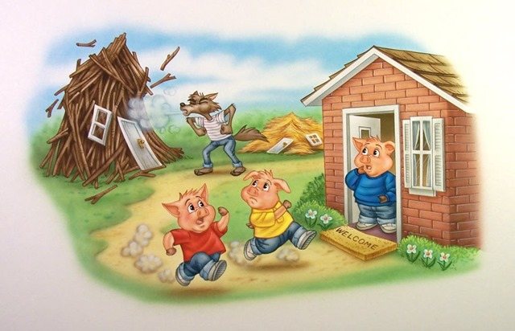
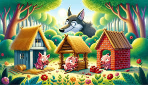

Realising what was happening, both the pigs escaped to the third pig’s house. The wolf followed them and reached the third pig house. Now, the wolf knocked on the door again and said, ‘Little pigs! Little pigs! Let me in! Let me in!’ But the frightened pigs answered back, ‘No! No! No! Not by the hair on our chinny chin chin!’ Then the wolf laughed cunningly and threatened, ‘Then I’ll huff, and I’ll puff, and I’ll blow your house in.’ The big bad wolf tried to bring the house down and huff and puff again and again, but it was of no use. The frustrated wolf attempted to make a forceful entry from the chimney, but the intelligent third pig boiled a large pot of water and placed it below the chimney. The wolf fell inside the pot, hurt himself, and ran away in a jiffy. The three pigs were overjoyed! The other two pigs praised the third pig for his hard work, practicality and intelligence.
© 2023 Pigs Story Copyright All Rights Reserved
 